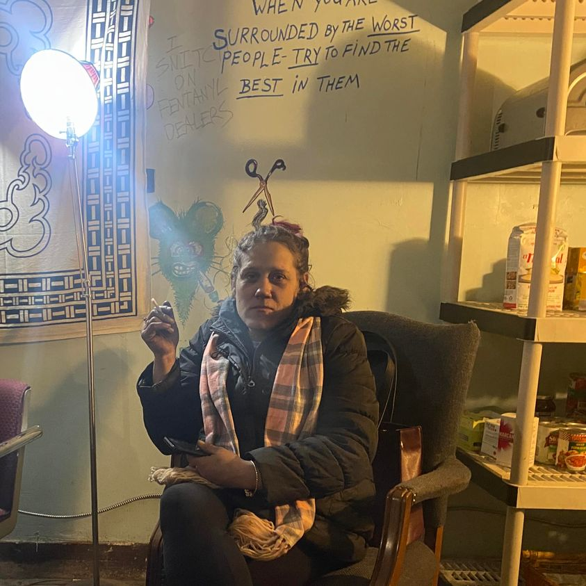

Mobile uploads
I’ve been sharing with you the story of Kristyn. Let me recap it here briefly.
Where things got “interesting” was the night her boyfriend, Dustin, kidnapped her.
He held her hostage on my property in a tent. He had 2 guns and threatened to kill her.
He then moved her to a riverbank. He stole a car and set it on fire.
He is currently in prison for that escapade. The last I heard he should be getting out in May.
Then her new boyfriend severely beat her. He broke her jaw, knocked out 8 teeth and split her lip all the way to her nose.
I asked her what started that beating. She said she didn’t know. She was sleeping when it all started.
Then a Good Samaritan bought her a week at a hotel during that cold snap this winter. She had never stayed at a hotel in her life. She loved it.
She said she wanted to go to rehab. She was really serious. Many of you bought her clothes and toiletries for the journey.
She became overwhelmed with anxiety and chose not to go.
That was a couple of weeks ago. She went back to her regularly scheduled programming. Humans find it incredibly difficult to make big life changes for some reason.
Two days ago she was hanging out with some of her friends. One of these friends snorted some fentanyl. He overdosed. One person gave him some Narcan. He was revived. They thought the emergency was over.
Sometimes a person has taken so much fentanyl that the Narcan wears off and they slip back into the overdose death spiral. That’s what happened here.
Kristyn came to him. He was purple. She began CPR. She administered more Narcan.
She saved his life.
We are now left to face the interesting, mystical question of it all: what if Kristyn had gone to rehab? Would that man still be alive?
I love these big questions. They ask such profound questions having to do with free will, divine intervention, and what the “right way” to live is.
Maybe Kristyn wasn’t meant to go to rehab. Maybe she is meant to be right where she is right now.
Maybe we are all here to do something bigger than being a tool to get a rich White man a bigger boat and get our government more bombs. Maybe we are on a personal journey that is not about how productive we are but how much we grow and learn in our lifetime. Maybe so much of life is suffering because suffering teaches us the most important lessons. Maybe it’s so hard to change because we aren’t meant to change.
I don’t know.
I’m not really into convincing anyone to change their life based on my value system. I don’t know how someone else should live their life. It’s their life. Not mine.
But I do know one thing. I know I’m incredibly grateful Kristyn was right where she was and had the skills, calmness and courage to save our friend’s life.
Thank you Kristyn. I love you.